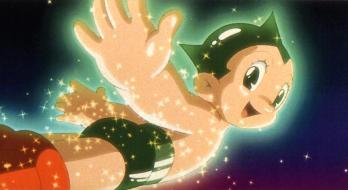

About Anime (アニメ)
What is Anime?
Anime (アニメ) is a Japanese term for hand-drawn or computer animation.
The word is the abbreviated pronunciation of "animation" in Japanese,
where this term references all animation. Outside Japan, anime is used
to refer specifically to animation from Japan or as a
Japanese-disseminated animation style.
Anime consists of an ideal story-telling mechanism, combining graphic art,
characterization, cinematography, and other forms of imaginative and
individualistic techniques. The production of anime focuses less on the
animation of movement and more on the realism of settings as well as the
use of camera effects, including panning, zooming, and angle shots. Being
hand-drawn, anime is separated from reality by a crucial gap of fiction
that provides an ideal path for escapism that audiences can immerse
themselves into with relative ease.
History and Development
The history of anime can be traced back to the start of the 20th century,
with the earliest verifiable films dating from 1917.
The first generation of animators in the late 1910s included Ōten
Shimokawa, Jun'ichi Kōuchi and Seitaro Kitayama, commonly referred to as
the "fathers" of anime. Propaganda films, such as Momotarō no Umiwashi
(1943) and Momotarō: Umi no Shinpei (1945), the latter being the first
anime feature film, were made during World War II. During the 1970s, anime
developed further, separating itself from its Western roots, and
developing distinct genres such as mecha and its super robot subgenre.
Typical shows from this period include Astro Boy, Lupin III and Mazinger
Z. During this period several filmmakers became famous, especially Hayao
Miyazaki and Mamoru Oshii.


In the 1980s, anime became mainstream in Japan, experiencing a boom in
production with the rise in popularity of anime like Gundam, Macross,
Dragon Ball, and genres such as real robot, space opera and cyberpunk.
Space Battleship Yamato and The Super Dimension Fortress Macross also
achieved worldwide success after being adapted respectively as Star
Blazers and Robotech.
The film Akira set records in 1988 for the production costs of an anime
film and went on to become an international success. Later, in 2004, the
same creators produced Steamboy, which took over as the most expensive
anime film. Spirited Away shared the first prize at the 2002 Berlin Film
Festival and won the 2003 Academy Award for Best Animated Feature, while
Innocence: Ghost in the Shell was featured at the 2004 Cannes Film
Festival.